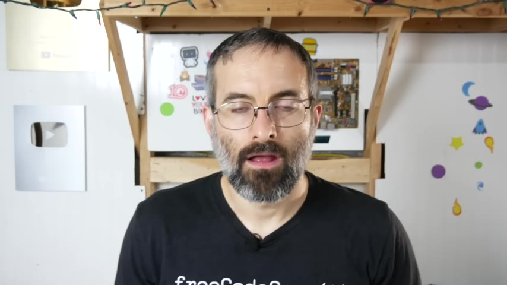
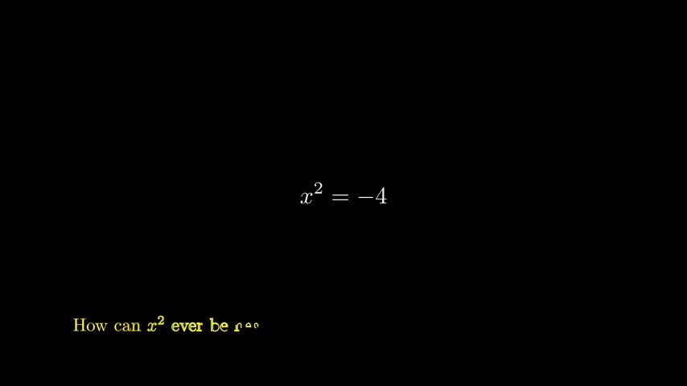
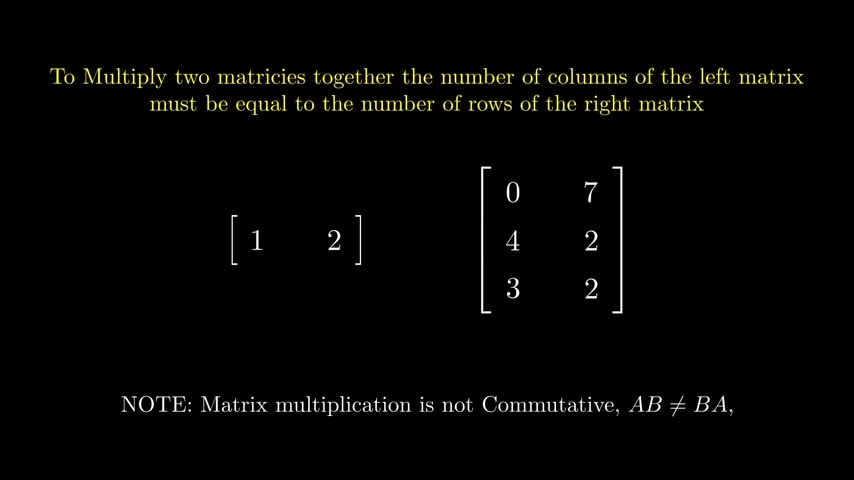
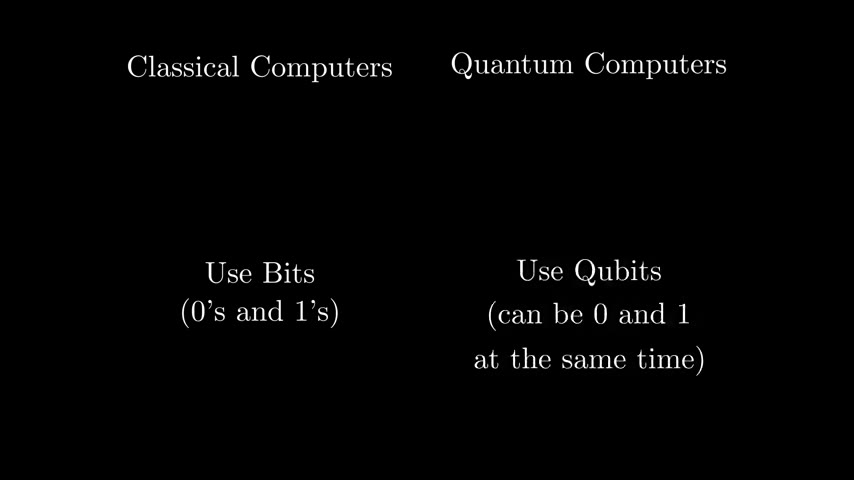
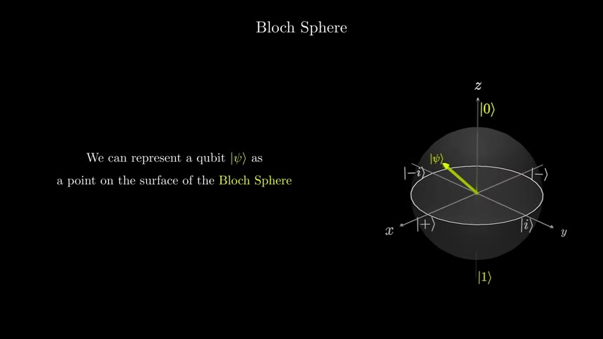
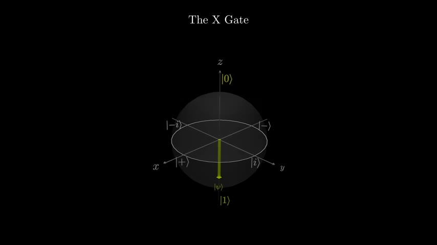
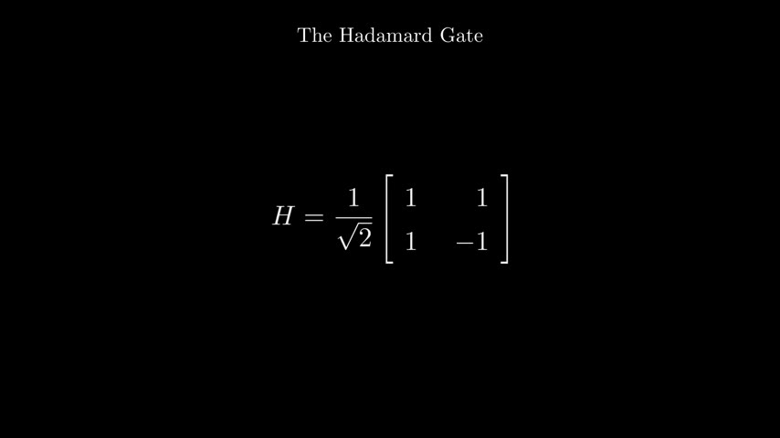
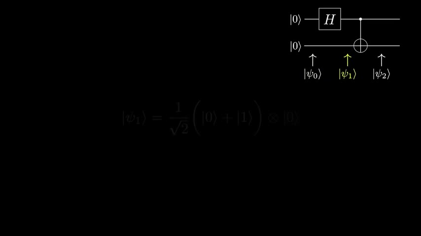
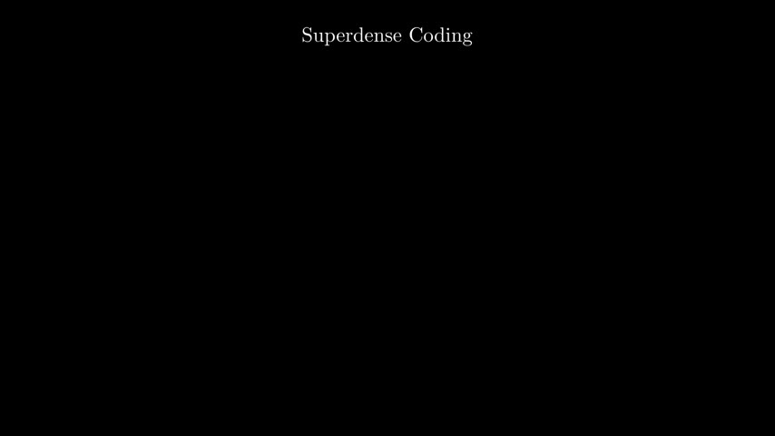
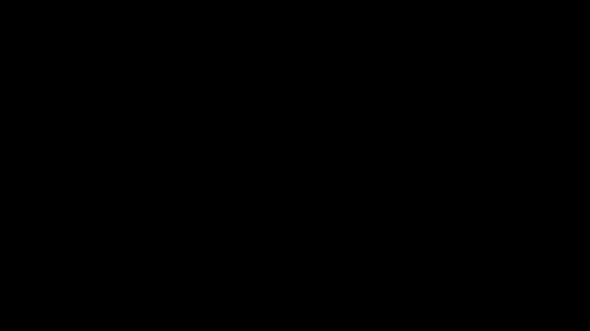

Introduction to Quantum Computing
A 96-minute course that builds quantum computing from the ground up — no analogies about particles being in two places at once, just the actual math. Starts with imaginary numbers and matrices, then walks through qubits, quantum gates, entanglement, and the algorithms that show quantum speedup.
Watch on YouTubeTL;DR
- Quantum states are vectors; quantum gates are unitary rotations, not switches
- Phase is the engine of quantum speedup — relative phase matters, global phase does not
- Entanglement links qubits so measuring one instantly determines the other
- Deutsch's algorithm determines a function's property with one query instead of two
- Shor's algorithm factors large numbers exponentially faster than any known classical method
01 · Why quantum computing matters
Intro
Most explanations of quantum computers lean on analogies — "bits are both zero and one at the same time" — that don't land. This course skips the analogies and teaches the actual math: complex numbers, matrices, and vector rotations. The result is a foundation you can use to derive every quantum algorithm from first principles.

When I first started learning about quantum computers, these analogies and explanations never made sense. This course was created to provide a solid foundation without them.— Michael
Section 1 — Essential math: complex numbers, linear algebra
Section 2 — Qubits: representation, superposition, measurement
Section 3 — Multiple qubits: tensor products, entanglement, phase kickback
Section 4 — Quantum algorithms: Deutsch, Deutsch-Jozsa, Shor, and more
02 · The math foundation
Imaginary & complex numbers
Quantum mechanics uses complex numbers in exponential form as its native language. Before getting to qubits, you need to understand why: rotating a quantum state is multiplication by $e^{i\theta}$, and that's what gives quantum gates their power.

Any number that contains a factor of the square root of minus one, or $i$, is an imaginary number.— Michael
The course derives Euler's formula naturally — not as a fact to memorize but as the bridge between algebra and geometry. When both complex numbers have unit magnitude, multiplying them adds their angles, which maps directly to rotating on the unit circle.
03 · The math foundation
Matrices as transformations
Quantum operations are matrices. But not just any matrices — unitary matrices, which preserve vector length (rotations and reflections). The course also introduces Hermitian matrices, which appear in observable measurements.

A unitary matrix $U$ satisfies $U^\dagger U = I$, meaning its conjugate transpose is its inverse. Geometrically, this means the matrix rotates or flips vectors without stretching them — essential because quantum probabilities must always sum to one.
04 · The qubit
What is a qubit?
A classical bit is 0 or 1. A qubit is a column vector $\begin{bmatrix}\alpha \ \beta\end{bmatrix}$ where $|\alpha|^2 + |\beta|^2 = 1$. The state $|0\rangle = \begin{bmatrix}1 \ 0\end{bmatrix}$ and $|1\rangle = \begin{bmatrix}0 \ 1\end{bmatrix}$ are the basis states in Dirac notation (bras and kets).

A qubit is in superposition if it has nonzero numbers in both the zero and one state — it is both of the states at the same time.— Michael
Measuring a qubit collapses its superposition: you get 0 with probability $|\alpha|^2$ and 1 with probability $|\beta|^2$, and the qubit permanently becomes that outcome. The numbers in the vector aren't the probability — their magnitudes squared are.
05 · Visualization
The Bloch sphere
Any single-qubit state can be visualized as a point on a sphere. The north pole is $|0\rangle$, the south pole is $|1\rangle$, and the equator holds states with equal probability of measuring 0 or 1, differing only by phase.

06 · Quantum gates
Single-qubit gates
Quantum gates rotate the qubit state on the Bloch sphere. The X, Y, and Z gates each rotate 180° (π radians) around their respective axes. The Hadamard gate maps $|0\rangle$ to the plus state and $|1\rangle$ to the minus state.

These three gates are their own inverses — applying the same gate twice returns the qubit to its original position.— Michael
The Z gate is subtle: it doesn't change measurement probabilities at all. It only adds a relative phase to the $|1\rangle$ component, multiplying it by −1. On the Bloch sphere, it rotates around the Z axis, which doesn't change the latitude (probability) but changes the longitude (phase).
07 · Phase
Hadamard & phase gates
Phase is what makes quantum computers powerful. The course distinguishes two types: global phase (physically irrelevant) and relative phase (extremely important). The S gate adds $\pi/2$ phase; the T gate adds $\pi/4$.

The Hadamard gate demonstrates why phase matters: $|+\rangle$ and $|-\rangle$ differ only by relative phase, but after another Hadamard they become $|0\rangle$ and $|1\rangle$ — different measurement outcomes from a difference that was invisible to direct measurement.
08 · Multi-qubit systems
Entanglement
Multiple qubits are represented by the tensor product of their states. A 2-qubit system has 4 basis states ($|00\rangle, |01\rangle, |10\rangle, |11\rangle$). When the joint state can't be factored into individual qubit states, the qubits are entangled — measuring one instantly determines the other.

Without even looking at both the qubits, by measuring one of them we immediately know the state of the other qubit. This is called entanglement.— Michael
The course covers maximally entangled Bell states and partially entangled states, where measuring one qubit shifts the probabilities of the other without fully determining it.
09 · Protocol
Superdense coding
Superdense coding uses one pre-shared entangled qubit pair to transmit two classical bits by sending only one qubit. Alice applies one of four operations (identity, X, Z, or XZ) to her qubit, then sends it to Bob. Bob performs a Bell measurement to recover both bits.

10 · Algorithm
Deutsch's algorithm
Deutsch's algorithm is the simplest quantum speedup demonstration. Given a "black box" function that takes one bit and returns one bit, determine whether it's constant (always returns the same output) or balanced (returns 0 for one input, 1 for the other).

Classically, this requires two queries. Quantum mechanically, one query suffices. The algorithm uses a phase oracle: when the output qubit is in the $|-\rangle$ state, querying $f$ applies a relative phase of $(-1)^{f(x)}$ to the input qubit. A final Hadamard gate converts this phase difference into a measurable bit flip.
11 · Algorithms deep
Deutsch-Jozsa, BV, QFT & phase estimation
The course extends Deutsch's algorithm to n bits (Deutsch-Jozsa), then to finding a secret string (Bernstein-Vazirani). The quantum Fourier transform encodes numbers into the phases of superposition states, and quantum phase estimation extracts eigenvalues of unitary operators. These are the building blocks of Shor's factoring algorithm.

- Step 1 — Choose $a$ coprime to $n$ (the number to factor)
- Step 2 — Use quantum phase estimation to find the period $r$ of $a^x \bmod n$
- Step 3 — Use continued fractions to estimate $s/r$ from the measured phase
- Step 4 — Compute $\gcd(a^{r/2} \pm 1, n)$ to find the factors
We will need a fault-tolerant quantum computer with millions of logical qubits — which won't happen for some time. But the algorithm shows that quantum computers can factor large numbers exponentially faster than any known classical method.— Michael